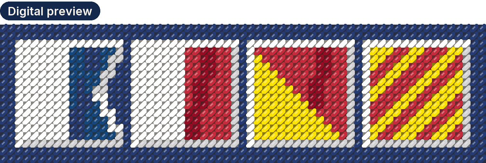

Digital needlepoint patterns
Coastal, preppy and signal-flag needlepoint patterns
Buoys & Bobbins NDLPT makes digital needlepoint patterns: Christmas and Hanukkah ornaments, birth flowers, and names, stockings and key fobs charted to order. Buoys for the coast, bobbins for the thread.
Visit the shop on Etsy See your name in signal flags
Every pattern is a PDF you download. Nothing is shipped.

Digital preview: AHOY in signal flags. Try your own name.
What you get
A PDF you download
Every pattern is a PDF you download, with a color chart, a black-and-white symbol chart, a DMC thread list and true-size pages for your mesh, so you can paint your own canvas or stitch straight from the chart.
13 and 18 mesh
Most patterns include both 13 and 18 mesh; a made-to-order chart is charted for the one mesh you choose. Which mesh?
Your name, charted
A name, a boat name or a word in nautical signal flags, charted for a key fob.
Collections
All patterns
About the pictures
The pictures of finished pieces in my listings are digital previews made from the chart, not photos of stitched samples. The chart pages you see are the real pages of the PDF.